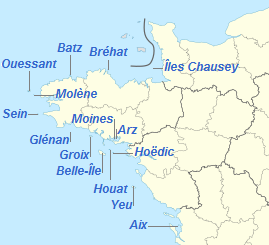

16 îles françaises de la façade ouest sont habitées à l'année par une population d'environ 16000 personnes, ce sont les îles du Ponant. Le mot ponant est un ancien mot qui signifiait "ouest", d'ailleurs en langue anglaise ce mot signifie "l'occident, la partie du monde qui se trouve au couchant du soleil". Les enfants de ces îles sont scolarisés jusqu'au collège dans 3 établissements géographiquement répartis sur l'ensemble des îles, la spécificité étant que ce sont les professeurs qui se déplacent d'île en île.
A découvrir...
Celui qui voit Belle-Isle, voit son île ;François-René Chateaubriand
celui qui voit Groix, voit sa joie ;
celui qui voit Ouessant, voit son sang.
